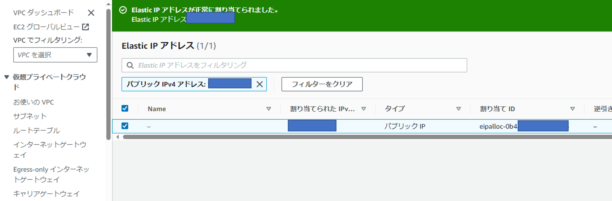
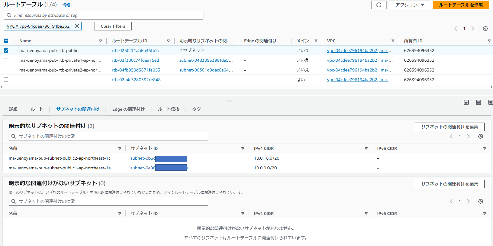
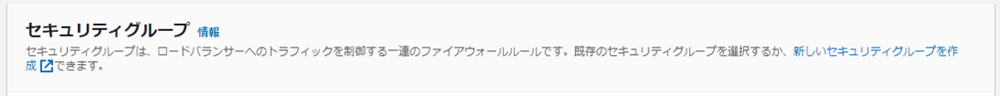

AWS ECS上に構築するSpringアプリケーション¶
このメモ、果たしてどこまで続くのか？
AWS ECS上に構築するSpringアプリケーション(1)¶
以下のサイトに従ってやります。 * AWS ECS上に構築するSpringアプリケーション(1)
1. VPC(Virtual Private Cloud)環境の構築 さっそくつまずき。 バージョン差分なのかサイトの情報と異なる項目が多かったですが、 以下の通りほぼデフォルトで設定してみました。


成功と出たので問題ないような気がします。
続いて「サブネットの作成」画面。 左のメニューから「ルートテーブル」を選択。 検索画面に先ほど作成したVPCの情報を入れるとなにやらいっぱい出てきました。

おそらく「プライベート」のルートテーブルが2つ、「パブリック」のルートテーブルが2つ、 ということなんだと思います。
続いて、メインが「いいえ」となっているルートテーブルへのサブネットの関連付けですが、 どれも「明示的な関連付けがないサブネットがありません。すべてのサブネットはルートテーブルに関連付けられています。」 とあったので、問題なさそう、、と判断して一旦次へ行ってみます。


AWS ECS上に構築するSpringアプリケーション(2)¶
以下のサイトに従ってやります。 * AWS ECS上に構築するSpringアプリケーション(2)
早速、ALBを準備してみます。
